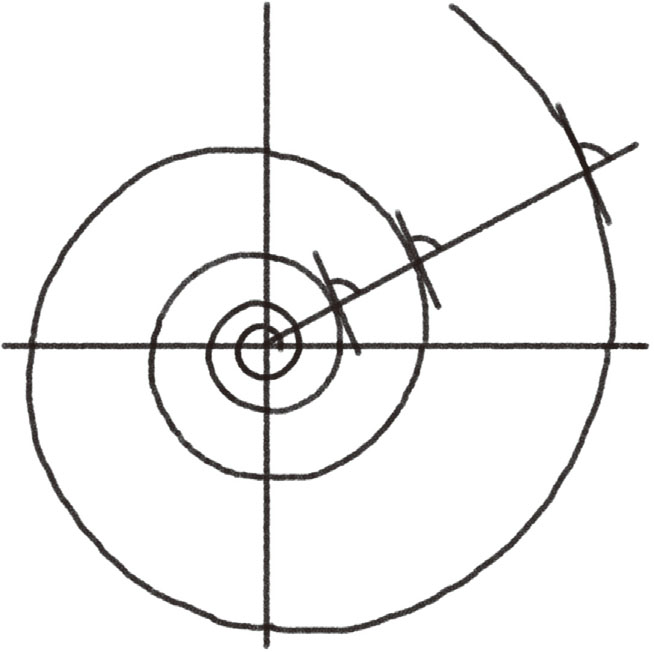
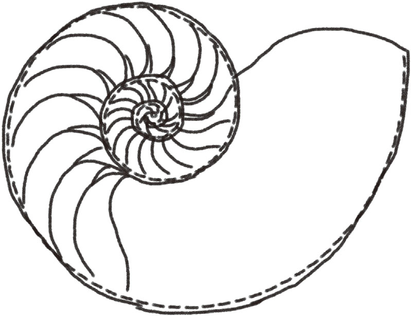
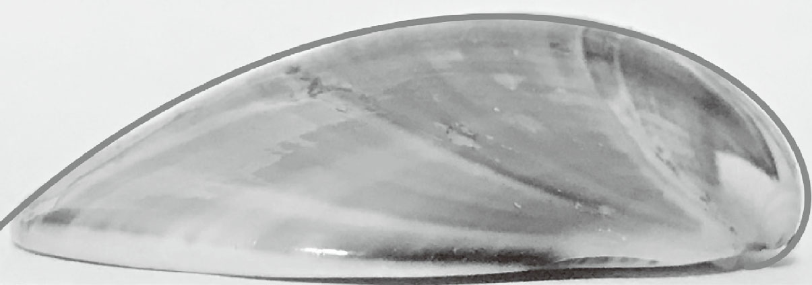
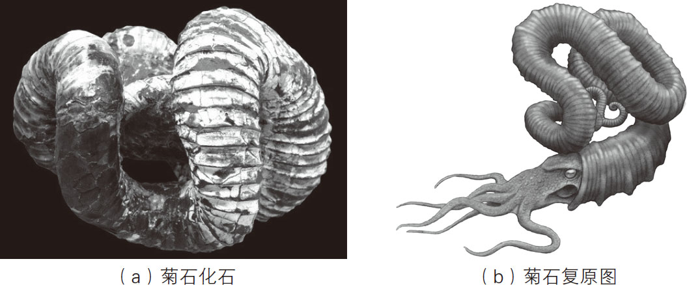

蝾螺、蛤仔、鲍鱼……生活在海洋中的贝类种类非常丰富。不同的贝类，壳的外形也有所不同。例如，海螺中的蝾螺，壳是陀螺形的；双壳类中的蛤仔，壳看起来像钱包；鲍鱼只有一片壳。即使种类相同，壳的外形也不尽相同。
可能有读者会好奇，形状各异的贝壳，其形成方式也是各不相同的吧？其实不然，无论是哪种贝类，壳的形成原理都是相同的。贝壳上的花纹都属于等角螺线 。等角螺线有一个明显的特性，就是以螺旋中心为顶点的射线与螺旋线相交时，形成的角度通常是相同的 ，如图1-4所示。

图1-4 等角螺线
对比等角螺线与贝类身上的花纹（如图1-5所示），会发现二者的形状十分相似。

图1-5 贝类身上的花纹
为什么贝类身上的花纹形状是等角螺线呢？这与贝壳的形成过程有关。贝类将自己分泌的钙质作为贝壳的原材料，一点一点地将贝壳做大，最终形成与自己身体大小相近的贝壳。
贝类的制造壳方法可以说是非常经济且合理的。试想，如果它们每次在身体长大时，都必须扔掉旧壳，重新做一个壳，那么宝贵的营养物质——钙，岂不是白白浪费了吗？而在改造旧壳的基础上完成新壳，就不会造成丝毫浪费。
前面说过，等角螺线的特性是即使螺旋变大，其角度也不会变化。我们将这种形状变大时性质保持不变的图形称为“相似形” 。基于相似形原理制成的贝壳，是最适合贝类居住的。如果螺旋的角度不时地放大或缩小，那么贝壳内部也会变得或宽敞或狭窄。这样的话，贝壳内壁会变得凹凸不平，贝类住起来也是很不舒服的。
乍一听等角螺线这个名字，会让人以为只有螺类身上才有等角螺线。其实不然，类似蛤仔、鲍鱼这种有二片或一片贝壳的贝类，其身上的花纹也都是等角螺线 。只不过这些贝类身上的等角螺线的螺旋角度很大，无法形成明显的弯曲，所以看起来不像等角螺线。如果对比大角度的等角螺线与蛤蜊身上的花纹，我们就会发现二者是吻合的，如图1-6所示。

图1-6 蛤蜊身上的花纹
由于双壳类壳上的等角螺线的螺旋角度太大，无法形成闭合空间，它们只好用两片壳来更好地保护自己。而类似鲍鱼这种只有一片壳的贝类，一般都会将无壳的那一面紧紧地附着在岩石上，以躲避其他生物的攻击。
中生代时期曾经有过一类菊石，它的壳呈现出不规则的扭曲——据说当时日本的近海区域就有，其化石及复原图如图1-7（a）和图1-7（b）所示。

图1-7 日本菊石米拉比利斯的化石及其复原图
［化石照片由产业技术综合研究所地质调查综合中心（GSJF9094）提供；复原图由川崎悟司绘制］
据说发现这类菊石化石之初，人们并没有将其视为新物种，而只当成普通菊石的变异。后来，人们又发现了好多这样的化石，并且发现相同的种类都有相同的形状，至于形状为什么如此怪异，直到现在也没有定论。但从某种意义上讲，这多半是为了适应环境才逐渐进化成这样的。
虽然这类菊石与目前常见的螺类形态完全不同，但是其身上的花纹也属于等角螺线。一般的螺类在利用分泌物制造新壳时，会沿着现有壳的水平方向进行，而根据这类菊石身上花纹的特点推测，它是沿着现有壳的垂直方向缓慢造壳的。因此，它们的壳渐渐变得立体起来。这类菊石的壳一边像常见的螺壳一样沿着水平方向按等角螺线扩展，一边又在垂直方向上周期性地不断卷曲，于是才有了它特殊的外形。
如今，即使不到海边，也能在网上买到各种美丽的贝壳。当我们看到赏心悦目、千差万别的贝壳时，不难发现，所有贝壳上的花纹都符合等角螺线的性质。看似毫无关联的事物之间，其实都有着美丽而简单的规律，这样的例子在自然界中还有很多。用一个简单的规律就能解释看似复杂的自然现象，正是探索科学的乐趣所在。